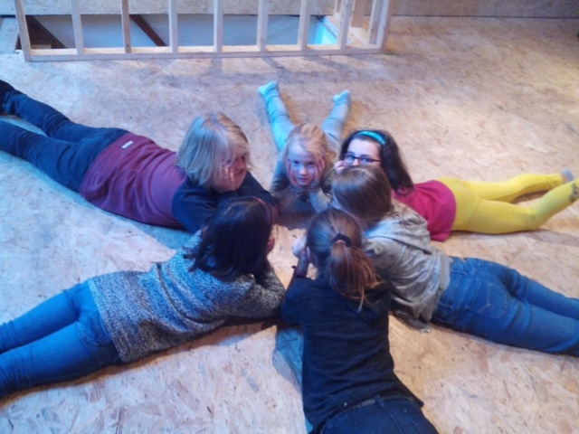

Les ateliers théâtre
Notre but est avant tout éducatif
favoriser l’épanouissement des jeunes, renforcer leur confiance en eux, les sociabiliser, les responsabiliser dans un projet commun. Leur donner la parole, leur permettre de s’exprimer...
Le spectacle des ados sera conçu à partir de leurs idées, de ce que qu’ils ont à dire, de leur façon de voir le monde et de se projeter dans l’avenir.
Notre but est aussi, bien entendu, de réaliser un beau spectacle qui permettra de valoriser chacun d’entre eux.

Catherine Paridans, l'animatrice
Diplômée de l’enseignement supérieur pédagogique (Educatrice A1), cette animatrice socioculturelle a plus de 30 ans d’expérience dans le travail d’animation pour enfants. En outre, elle a, à son actif, une dizaine de spectacles de théâtre comme metteur en scène dans le cadre d’animations d’ateliers théâtre avec des enfants ou des ados.
Suite au casting du 1er octobre dernier, les deux troupes (Les Babillards et les Saltimbanques) sont complètes pour cette année.
Vous pouvez néanmoins assister au spectacle de fin d'année et vous tenir prêts pour la saison 2017-2018.
Spectacle de fin d'année : le 27 mai 2017 à 20h.
Réservations au 0492/40.40.84 ou via info@banc-public.be. Tous les détails de la représentation sont sur la page de notre évènement Facebook.